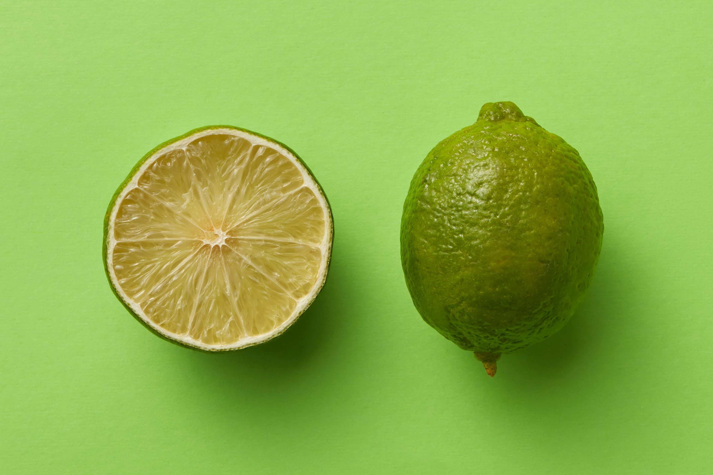

O limão é uma fruta cítrica que, além de muita vitamina C, é um excelente antioxidante e rico em fibras solúveis que ajudam a diminuir o apetite e regular o intestino, sendo muito utilizado para temperar peixes, mariscos e frango. Além disso, a casca do limão e suas folhas contêm óleos essenciais que proporcionam o seu cheiro característico e podem ser usadas para fazer chá.
O limão recém colhido possui contém cerca de 55% da quantidade diária necessária de vitamina C, que atua como um poderoso antioxidante e ajuda a melhorar o sistema imunológico, evitando doenças como a gripe e os resfriados, além de conter outros componentes antioxidantes, como polifenóis, limonoides e ácido cafeico.
Os principais benefícios do consumo do Limão
- 1. Favorece a perda de peso: O limão pode ajudar na perda de peso, já que possui poucas calorias e é rica em fibras, formando uma goma no estômago e diminuindo o apetite. Além disso, acredita-se que a vitamina C ajuda a desintoxicar o organismo e poderia acelerar o processo de oxidação das gorduras, o que pode favorecer o processo de perda de peso. Beber água com limão, sem açúcar ou adoçante, ajuda a limpar as papilas gustativas, diminuindo a vontade de comer alimentos doces, além de possuir efeito diurético, ajudando a combater a retenção de líquidos.
- 2. Previne a prisão de ventre: O limão ajuda a estimular o intestino por ser rico em fibras, o que favorece a passagem das fezes pelo trato gastrointestinal, tendo um melhor efeito quando consumido com água morna logo em jejum.
- 3. Exerce efeitos gastroprotetores: Um dos compostos ativos do limão é o limoneno, o qual foi demonstrado ter efeitos anti-inflamatórios e antimicrobianos contra a bactéria Helicobacter pylori, além de prevenir o surgimento de úlceras estomacais e duodenais.
- 4. Protege contra infecções: Devido ao limoneno, o limão possui propriedades antifúngicas e antibacterianas que ajudam a combater doenças como a candidíase, gripe, resfriados e infecção por outras bactérias como Staphylococcus aureus, Streptococcus pneumoniae e Moraxella catarrhalis.
- 5. Melhora a aparência da pele: Por ser rico em vitamina C, o consumo regular de limão promove a regeneração dos tecidos e a formação de colágeno, que é uma estrutura que dá firmeza e elasticidade à pele, acelerando a cicatrização das feridas. Além disso, é rico em compostos bioativos com propriedades antioxidantes, os quais previnem o envelhecimento precoce e o surgimento de rugas.
- 6. Diminui a pressão arterial: O limão poderia ajudar a regular a pressão arterial, já que é rico em flavonoides que exercem um efeito inibitório na vasoconstrição das artérias, relaxando os vasos sanguíneos e melhorando, assim, o fluxo sanguíneo. Além disso, a vitamina C também tem sido relacionado com uma diminuição da pressão arterial.
- 7. Previne a anemia: O limão ajuda a prevenir anemia porque contém vitamina C, o qual favorece a absorção de ferro a nível intestinal, principalmente o ferro proveniente de origem vegetal. Para isso, é importante consumir os alimentos ricos neste mineral em conjunto com uma alimentação rica em vitamina C, incluindo o limão.
- 8. Previne as pedras nos rins: O ácido cítrico presente nos limões poderia ajudar a prevenir a formação de pedra nos rins, já que a urina é menos ácida. Além disso, exerce propriedades diuréticas que também ajuda a prevenir a formação de cálculos.
- 9. Previne alguns tipos de câncer: O limão contém diversos compostos bioativos como os limonoides e flavonoides que possuem propriedades anti-tumorais, anti-inflamatórios e antioxidantes que evitam a formação de radicais livres, induzem a apoptose e inibem a proliferação celular.
- 10. Previne a acne: Devido à propriedade antimicrobiana e anti-inflamatória do limão, é possível combater algumas bactérias que estão relacionadas com a formação da acne.
Tabela de informação nutricional
A tabela a seguir indica a composição nutricional por cada 100 g de limão:
| Componentes | 1 Limão (100g) | Suco de limão |
| Energia | 31 calorias | 25 calorias |
| Água | 90,1 g | 91,7 g |
| Proteína | 0,5 g | 0,3 g |
| Gordura | 0,3 g | 0 g |
| Carboidratos | 1,9 g | 1,5 g |
| Fibras | 2,1 g | 0 g |
| Vitamina C | 55 mg | 56 mg |
| Vitamina A | 2 mcg | 2 mcg |
| Vitamina B1 | 0,04 mg | 0,03 mg |
| Vitamina B2 | 0,02 mg | 0,01 mg |
| Vitamina B3 | 0,2 mg | 0,2 mg |
| Vitamina B6 | 0,07 mg | 0,05 mg |
| Folatos | 9 mcg | 13 mcg |
| Cálcio | 26 mg | 7 mg |
| Magnésio | 9 mg | 7 mg |
| Fósforo | 16 mg | 10 mg |
| Potássio | 140 mg | 130 mg |
| Ferro | 0,5 mg | 0,2 mg |